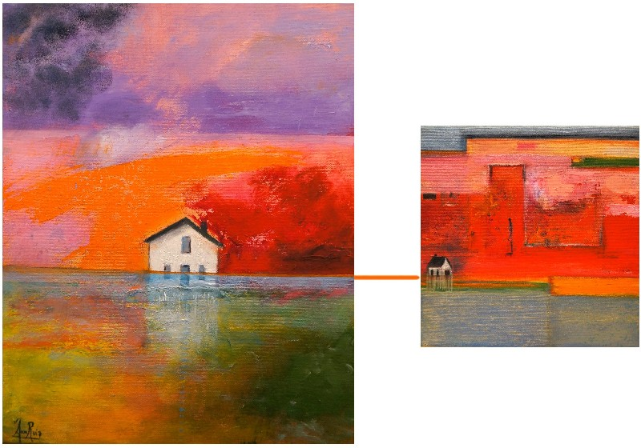
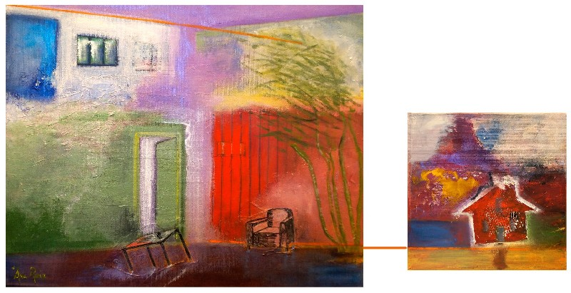
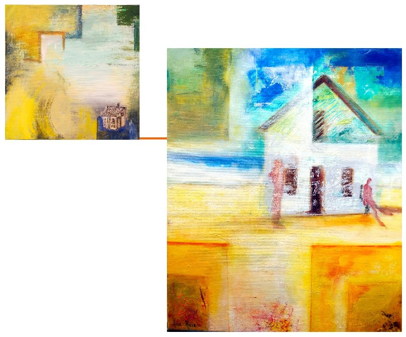
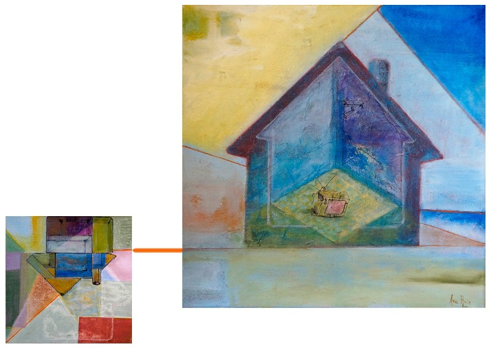
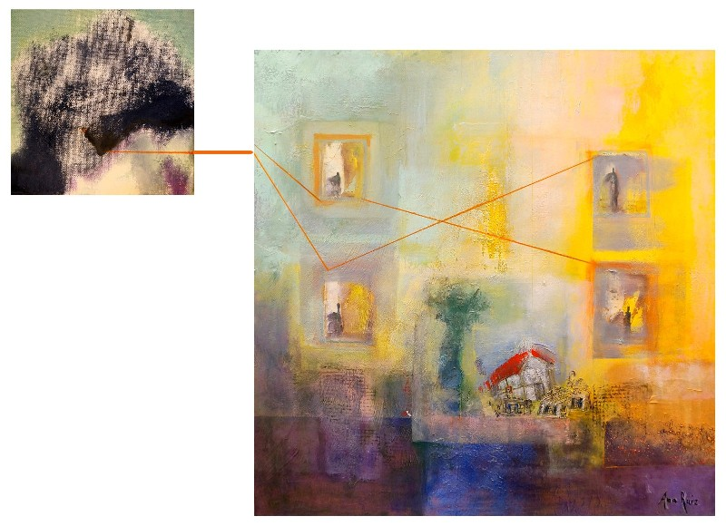
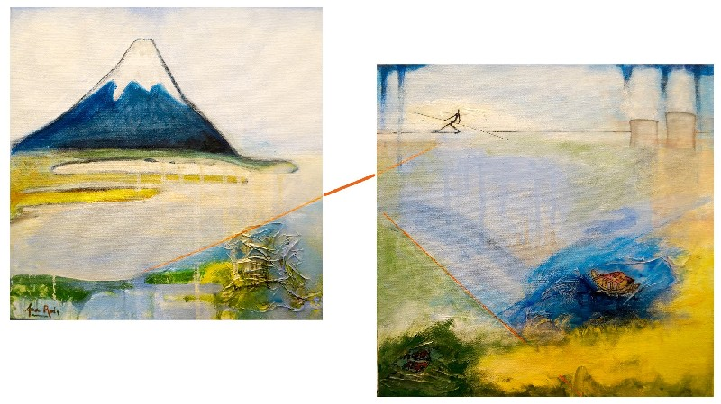

La maison ou le pouvoir de rentrer en soi-même (2012)
Zur Ausstellung
Weil es untrennbar materiell und immateriell zugleich ist — Haus, in dem man lebt, und Haus, das man tief in sich trägt —, bewohnt uns das Haus ebenso sehr, wie wir es bewohnen. Deshalb heißt es zu verlieren auch, sich selbst zu verlieren: draußen ausgesperrt zu bleiben und außerhalb seiner selbst, im Exil, beraubt des intimen Lebensraums und der Kraft, in sich selbst zurückzukehren, getrennt von sich und von den anderen wie ein Gespenst, das vom verschwundenen Haus heimgesucht wird.
Ein altes Volksmärchen lehrt uns, dass wir dank unserer Arbeit und sofern wir vorausschauend sind, für die Sicherheit der Hausgemeinschaft nichts zu fürchten haben, denn wir werden weise zwischen dem Haus aus Stroh und dem aus Zement wählen, das dem Atem des Wolfs standhält, der das Strohhaus mühelos hinwegfegen und das Holzhaus so heftig rütteln kann, dass es schließlich zusammenstürzt. Doch der Wolf ist zu einem weit schlimmeren Sinnbild der Gefahren geworden, die die Heime bedrohen. Welche Art Haus wird uns unfehlbar vor den Stürmen schützen können, die über unsere Welt hinwegfegen und ganze Bevölkerungen finanziell in den Ruin stürzen? Das Märchen sagt es nicht.
Auf dem Seil, das alle Häuser der Welt miteinander verbindet, schreitet schwankend und beharrlich eine zerbrechliche Silhouette voran. Sollte es ein seiltanzender Hidalgo sein, den die Kraft eines edlen und großherzigen Ideals vor dem Fallen bewahrt und allem zum Trotz vorwärtstreibt? Sucht er, von Haus zu Haus, eine Tür, die sich auf eine andere Welt öffnet, in der jedes Haus der Mittelpunkt des Universums ist und keines je zerstört werden wird? Wir alle gehen auf einem Seil, und von dort oben, wenn wir genau hinsehen, wenn wir, ans Fenster des Herzens gelehnt, hinausschauen,
Germinal Arcal Palacio
„(…) erscheinen alle Häuser wie hübsch bemalte Schiffsrümpfe auf dem unermesslichen blauen Meer des Universums. Zerbrechlich, mit ihren kleinen dreieckigen Segeln und dem zum Himmel gerichteten Mast, sprechen sie zugleich von unserer Eingeschlossenheit und unserer Leichtigkeit, von unserem Ernst und unserer Eitelkeit.“





